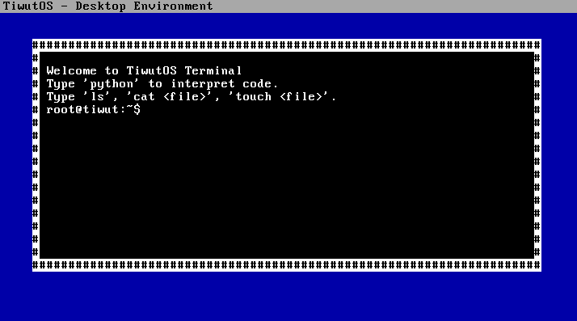

Not Linux. Not Windows. TiwutOS is a custom-built 32-bit operating system featuring a hybrid kernel, Python-style scripting, and a clean interface.
Designed for education, minimalism, and total control.
Integrated Mini-Python interpreter allows for on-the-fly scripting and calculation directly within the kernel environment.
A custom implementation of a VFS allowing file creation (touch), reading (cat), and listing (ls) entirely in memory.
Built on a 32-bit protected mode kernel written in C and Assembly, bypassing standard bloat found in modern OSs.
Features a custom VGA text-mode Graphical User Interface with window management simulation and mouse support.
#define VGA_ADDRESS 0xB8000
#define BUFSIZE 256
enum Colors {
BLACK = 0, BLUE = 1, GREEN = 2, CYAN = 3, RED = 4,
MAGENTA = 5, BROWN = 6, LIGHT_GREY = 7, DARK_GREY = 8,
LIGHT_BLUE = 9, LIGHT_GREEN = 10, LIGHT_CYAN = 11,
LIGHT_RED = 12, LIGHT_MAGENTA = 13, YELLOW = 14, WHITE = 15
};
unsigned short* terminal_buffer = (unsigned short*)VGA_ADDRESS;
int cursor_x = 0;
int cursor_y = 2;
int width = 80;
int height = 25;
unsigned char port_byte_in(unsigned short port) {
unsigned char result;
__asm__("in %%dx, %%al" : "=a" (result) : "d" (port));
return result;
}
void port_byte_out(unsigned short port, unsigned char data) {
__asm__("out %%al, %%dx" : : "a" (data), "d" (port));
}
void set_cursor(int x, int y) {
unsigned short pos = y * width + x;
port_byte_out(0x3D4, 0x0F);
port_byte_out(0x3D5, (unsigned char)(pos & 0xFF));
port_byte_out(0x3D4, 0x0E);
port_byte_out(0x3D5, (unsigned char)((pos >> 8) & 0xFF));
}
void clear_screen(unsigned char bg_color) {
unsigned short clear_char = 0x20 | (bg_color << 12) | (WHITE << 8);
for (int i = 0; i < width * height; i++) {
terminal_buffer[i] = clear_char;
}
cursor_x = 0;
cursor_y = 2;
}
void draw_ui() {
clear_screen(BLUE);
unsigned short bar_color = (LIGHT_GREY << 12) | (BLACK << 8);
for (int i = 0; i < width; i++) {
terminal_buffer[i] = ' ' | bar_color;
}
const char* title = " TiwutOS - Desktop Environment ";
int i = 0;
while(title[i] != 0) {
terminal_buffer[i] = title[i] | bar_color;
i++;
}
int win_x = 5, win_y = 3, win_w = 70, win_h = 18;
unsigned short win_bg = (BLACK << 12) | (WHITE << 8);
unsigned short win_border = (WHITE << 12) | (BLACK << 8);
for (int y = win_y; y < win_y + win_h; y++) {
for (int x = win_x; x < win_x + win_w; x++) {
if (y == win_y || y == win_y + win_h - 1 || x == win_x || x == win_x + win_w - 1)
terminal_buffer[y * width + x] = '#' | win_border;
else
terminal_buffer[y * width + x] = ' ' | win_bg;
}
}
cursor_x = win_x + 2;
cursor_y = win_y + 2;
}
void print(char* str) {
unsigned short attrib = (BLACK << 12) | (WHITE << 8);
int i = 0;
while (str[i] != 0) {
if (str[i] == '\n') {
cursor_x = 7;
cursor_y++;
} else {
terminal_buffer[cursor_y * width + cursor_x] = str[i] | attrib;
cursor_x++;
}
i++;
}
set_cursor(cursor_x, cursor_y);
}
int strcmp(char* s1, char* s2) {
while (*s1 && (*s1 == *s2)) { s1++; s2++; }
return *(unsigned char*)s1 - *(unsigned char*)s2;
}
void strcpy(char* dest, char* src) {
while (*src) { *dest++ = *src++; }
*dest = 0;
}
int strncmp(char* s1, char* s2, int n) {
while (n > 0 && *s1 && (*s1 == *s2)) { s1++; s2++; n--; }
if (n == 0) return 0;
return *(unsigned char*)s1 - *(unsigned char*)s2;
}
struct File {
char name[32];
char content[128];
};
struct File fs[5];
int file_count = 0;
void fs_init() {
strcpy(fs[0].name, "readme.txt");
strcpy(fs[0].content, "Welcome to TiwutOS! This is a virtual file.");
file_count = 1;
}
void fs_create(char* name, char* content) {
if (file_count < 5) {
strcpy(fs[file_count].name, name);
strcpy(fs[file_count].content, content);
file_count++;
print("File created.\n");
} else {
print("Disk full (Memory limit).\n");
}
}
void fs_cat(char* name) {
for (int i = 0; i < file_count; i++) {
if (strcmp(fs[i].name, name) == 0) {
print(fs[i].content);
print("\n");
return;
}
}
print("File not found.\n");
}
void run_python(char* code) {
print("[Python] Executing...\n");
if (strncmp(code, "print(\"", 7) == 0) {
char* msg_start = code + 7;
char buffer[64];
int i = 0;
while (msg_start[i] != '"' && msg_start[i] != 0) {
buffer[i] = msg_start[i];
i++;
}
buffer[i] = 0;
print(buffer);
print("\n");
}
else if (strcmp(code, "os.name") == 0) {
print("'tiwut-os'\n");
}
else {
print("Syntax Error: Unknown command\n");
}
}
char kbd_map[128] = {
0, 27, '1', '2', '3', '4', '5', '6', '7', '8', '9', '0', '-', '=', '\b',
'\t', 'q', 'w', 'e', 'r', 't', 'y', 'u', 'i', 'o', 'p', '[', ']', '\n',
0, 'a', 's', 'd', 'f', 'g', 'h', 'j', 'k', 'l', ';', '\'', '`', 0,
'\\', 'z', 'x', 'c', 'v', 'b', 'n', 'm', ',', '.', '/', 0, '*', 0, ' '
};
void kernel_main() {
draw_ui();
fs_init();
print("Welcome to TiwutOS Terminal\n");
print("Type 'python' to interpret code.\n");
print("Type 'ls', 'cat ', 'touch '.\n" );
print("root@tiwut:~$ ");
char buffer[BUFSIZE];
int buf_idx = 0;
while (1) {
unsigned char status = port_byte_in(0x64);
if (status & 0x01) {
unsigned char scancode = port_byte_in(0x60);
if (scancode & 0x80) continue;
char c = kbd_map[scancode];
if (c == '\n') {
buffer[buf_idx] = 0;
print("\n");
if (strcmp(buffer, "help") == 0) {
print("Cmds: ls, touch, cat, python, clear\n");
}
else if (strcmp(buffer, "ls") == 0) {
for(int i=0; iprint(fs[i].name); print(" ");
}
print("\n");
}
else if (strcmp(buffer, "clear") == 0) {
draw_ui();
print("root@tiwut:~$ ");
buf_idx = 0;
continue;
}
else if (strncmp(buffer, "touch ", 6) == 0) {
fs_create(buffer + 6, "Empty File");
}
else if (strncmp(buffer, "cat ", 4) == 0) {
fs_cat(buffer + 4);
}
else if (strncmp(buffer, "python ", 7) == 0) {
run_python(buffer + 7);
}
else if (strcmp(buffer, "") != 0) {
print("Unknown command.\n");
}
print("root@tiwut:~$ ");
buf_idx = 0;
}
else if (c == '\b') {
if (buf_idx > 0) {
buf_idx--;
cursor_x--;
terminal_buffer[cursor_y * width + cursor_x] = (' ' | ((BLACK << 12) | (WHITE << 8)));
set_cursor(cursor_x, cursor_y);
}
}
else if (c != 0) {
buffer[buf_idx++] = c;
char temp[2] = {c, 0};
print(temp);
}
for(int i=0; i<1000000; i++);
}
}
}